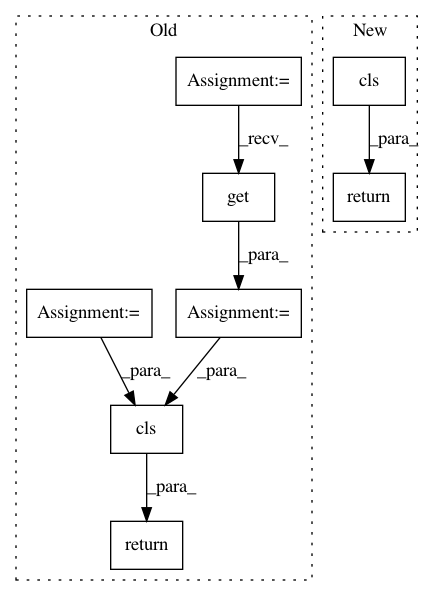

83218b7cb41cbcd3b4800313ecd8fe33b846205a,tensorflow_datasets/core/features/sequence_feature.py,Sequence,from_json_content,#Any#Any#,209
Before Change
@classmethod
def from_json_content(cls, value) -> "FeatureConnector":
length = value.pop("length")
if value.get("arg_", None) == "feature":
subclass = cls._REGISTERED_FEATURES.get(value["type"])
return cls(subclass.from_json_content(value["content"]), length)
features = dict()
kwargs = dict()
for key, value in value.items():
subclass = cls._REGISTERED_FEATURES.get(value["type"], None)
After Change
@classmethod
def from_json_content(cls, value: Json) -> "FeatureConnector":
return cls(
feature_lib.FeatureConnector.from_json(value["feature"]),
value["length"]
)
def to_json_content(self) -> Json:
assert not self._kwargs, "Json export/import should be updated"
return {
In pattern: SUPERPATTERN
Frequency: 3
Non-data size: 8
Instances
Project Name: tensorflow/datasets
Commit Name: 83218b7cb41cbcd3b4800313ecd8fe33b846205a
Time: 2020-08-07
Author: cs17btech11040@iith.ac.in
File Name: tensorflow_datasets/core/features/sequence_feature.py
Class Name: Sequence
Method Name: from_json_content
Project Name: dpressel/mead-baseline
Commit Name: 4c78e4d91abe9e6a37723bc2a4cff7a203f64013
Time: 2018-11-30
Author: dpressel@gmail.com
File Name: python/baseline/tf/embeddings.py
Class Name: LookupTableEmbeddings
Method Name: create
Project Name: dpressel/mead-baseline
Commit Name: 4c78e4d91abe9e6a37723bc2a4cff7a203f64013
Time: 2018-11-30
Author: dpressel@gmail.com
File Name: python/baseline/tf/embeddings.py
Class Name: PositionalLookupTableEmbeddings
Method Name: create